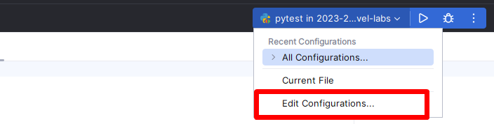
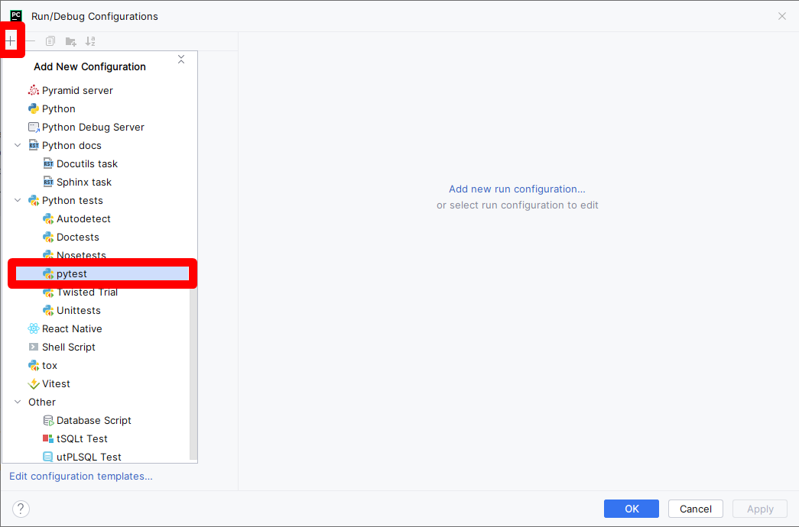
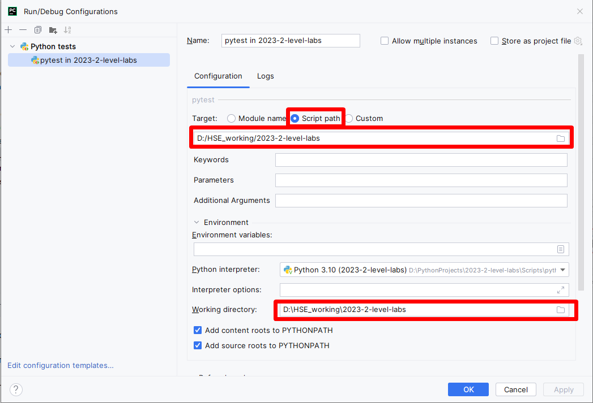
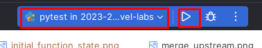
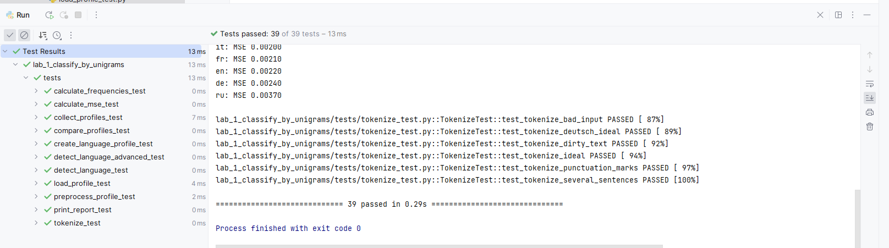
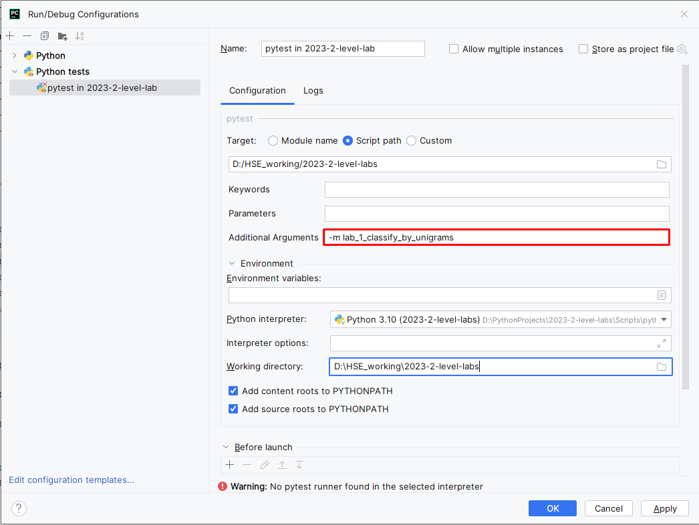
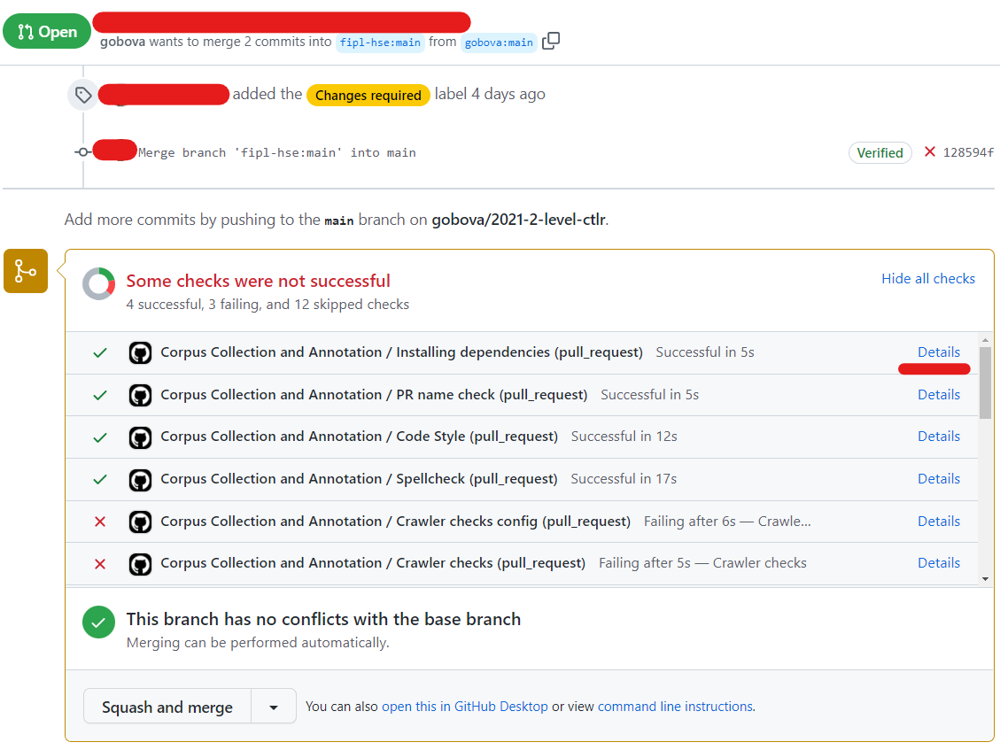
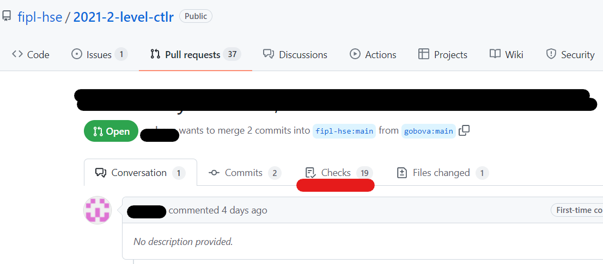

Working with tests: locally and in CI
Running tests locally with PyCharm
To configure tests locally you need to perform several steps:
Install tests dependencies:
python -m pip install -r requirements_qa.txt
Important
Ensure you have activated your environment
if you have such by running .\venv\Scripts\activate
(Windows) or source venv\bin\activate (macOS).
Create a new configuration:
Choose
pytestas a target:Fill
pytestconfiguration and clickOK:Run
pytestconfiguration:This should run all the tests in the repository. You can inspect them by clicking through a list at the bottom of a screen.
As you have some tests failing, you want to debug them. Then, first, you need to limit a scope of running tests and the mark level you want to get for an assignment. For example, you might want to run checks for a crawler configuration. Then you need to return to configuration menu and pass additional parameters, like
-m stage_2_1_crawler_config_check.You can choose any of the labels that are described in
../pyproject.tomland combine with a mark. For example, running the aforementioned check for configuration for a mark 8 will look like-m "mark8 and stage_2_1_crawler_config_check".
Hint
To running all tests for first assignment for mark 8:
-m "mark8 and (stage_2_1_crawler_config_check or stage_2_2_crawler_check or stage_2_3_HTML_parser_check or stage_2_4_dataset_volume_check or stage_2_5_dataset_validation)"
Hint
When you want to debug a test, instead of running them, put a breakpoint at the potentially vulnerable place of code and execute debugging by clicking a ‘bug’ button.
Running tests in command-line
Install dependencies (assuming you have activated the environment from the previous step):
python -m pip install -r requirements_qa.txt
Run the tests for the given mark. You can select any level:
mark4,mark6,mark8,mark10:python -m pytest -m mark8
Running tests in CI
Tests will never run until you create a Pull Request.
The very first check happens exactly when you create a pull request. After that, each time you push changes in your fork, CI check will be automatically started, normally within a minute or two. To see the results, navigate to your PR and click either the particular step in the report at the end of a page, or click Checks in the toolbar.
 Inspect each step by clicking through the list to the left.